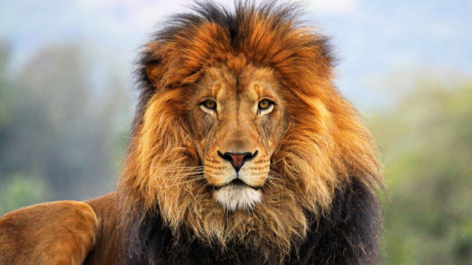

Lions — Лев (лат. Panthera leo) — вид хищных млекопитающих, один из четырёх представителей рода пантер (Panthera), относящегося к подсемейству больших кошек (Pantherinae) в составе семейства кошачьих.
Лев – одно из крупных хищных животных, принадлежащее к семейству кошачьих. Существует несколько разновидностей этого животного, кроме этого известно немало гибридов, появившихся от смешения разных видов. Каждый из них отличается определенными особенностями, но имеет и сходство. Местное население земель, которые размещены рядом с ареалом обитания зверя, называет его «дикой кошкой» и считает опасным, старается уничтожать. Из-за этого популяция этих животных сильно сократилась. Между тем, лев – животное интересное и своеобразное, поэтому стоит знать, чем он отличается от других представителей фауны.

Характеризуя такое животное, как лев, нужно предоставить его описание. Разные виды немного отличаются друг от друга, но у них есть много общего. Зверь принадлежит к семейству кошачьих, поэтому по своему внешнему виду похож на домашних кошек, только значительно превосходит их по размерам. Он является одним из самых крупных представителей этого семейства, уступая только тигру.
Тело зверя отличается гибкостью и подвижностью, у них хорошо развиты мышцы передних лап и шеи. На лапах находятся когти, длина которых достигает 7 см. Голова его крупная, с вытянутой мордой и сильными челюстями. Клыки у него длинные (около 8 см), количество зубов – 30 шт. Эти особенности дают льву возможность охотиться на больших травоядных животных. Язык покрыт бугорками, благодаря которым лев может чистить свою шерсть от грязи и устранять насекомых. На морде находятся усы, у основания которых есть небольшие темные пятнышки. Эти пятнышки образуют узор, уникальный для каждого животного. Детеныши появляются на свет пятнистыми, но по мере взросления пятна с их тела исчезают, а цвет шерсти становится однородным – коричневым, либо песочным. На кончике хвоста у зверя располагается черная кисточка.
Давая описание любого животного, нужно рассмотреть не только его внешний вид. Стоит выяснить также, сколько живет лев и где он обитает.
Мест, где живет такое животное, как лев, немного. В последние годы ареал его распространения существенно сократился. Раньше этот зверь встречался не только в Африке и Индии, как сейчас, но и в Иране, России, Южной части Европы и Ближнем Востоке. Но значительная часть популяции была истреблена, а условия на многих территориях стали непригодными для их жизни. Поэтому из всех мест, где раньше можно было увидеть этих животных, теперь обитает лев только на южной части африканского континента (за пустыней Сахара) и в индийском штате Гуджарат. Наиболее подходящими для них являются саванны, леса или кустарниковые заросли.
Особи объединяются в небольшие стаи – прайды. В состав прайда входят 5 или 6 самок, между которыми есть родственная связь, их детеныши и самец. В некоторых прайдах самцов может быть двое, если они являются братьями. Молодые мужские особи, достигнув зрелости, покидают прайд (их изгоняют). У них есть возможность примкнуть к другому прайду либо создать собственный. Некоторые их них ведут жизнь одиночки.
Лев – это такой зверь, у которого можно заметить немало интересных особенностей. Одна особенность касается окраски. Некоторые классификации упоминают такие разновидности, как белый лев и черный лев. Но это ошибочно. Если лев с темной или черной гривой является реально существующим подвидом, то животные с белой либо черной окраской считаются аномалией.
В то же время, нельзя сказать, будто лев с экзотической окраской – выдумка. Существует генетическая мутация, которая называется лейкизм. Из-за нее шерсть зверей приобретает белый цвет. Это происходит из-за недостатка меланоцитов. Результатом становится появление такого животного, как белый лев. Можно предположить, что это лев-альбинос, но цвет его глаз, который может быть как голубым, так и золотистым, говорит обратное.
Белый лев почти не отличается по своим характеристикам от остальных представителей вида. Он несколько крупнее, чем остальные. Их вес может достигать 310 кг, а длина тела самца превышает 3 м. Самки таких животных немного меньше – 2,7 м. Лев с белой шерстью в течение жизни немного меняет окраску, и к старости его тело приобретает оттенок слоновой кости.
Черный лев, по мнению многих ученых, в природе не существует. Встречающиеся в сети фото и видео таких зверей они считают результатом съемки в темное время суток или специальной обработкой. Некоторые предполагают, что в противовес альбинизму существует явление меланизма, при котором в шерсти животных оказывается слишком много пигмента. Это возможно у ягуаров и леопардов. В результате скрещивания может родиться лев с темным оттенком шерсти, но это лишь случайность, поэтому выделять таких животных в отдельный подвид нет необходимости.